Your steps build a shoe.
WALKn is a free step counter with a game on top. Every verified step goes into your in-game gear — a virtual shoe that levels up, earns stats, wears down, and slowly becomes unmistakably yours.
- No paywall
- Nothing to buy. Ads only if you ask for one.
- Shake-proof
- Shakes and car rides earn nothing.
- 128 colors
- Per item, plus suede, chrome and holographic.
Walk. Earn. Build.
Walk the way you already do. WALKn keeps score, and turns the score into gear you build.
-
01
Walk
Your phone counts every step in the background, even with the app closed.
-
02
Earn
Foot Prints for every verified step, spent on crafting, repairs and level-ups. Your first crate is guaranteed within 1,000 steps, and its first unlock is on us.
See the crates → -
03
Build
Craft shoes, laces and charms in the Tailor, then level your shoe up and make it yours.
See the Tailor →
Crates drop while you walk.
Every step banks toward your next crate, so a miss is never wasted and there are no long dry spells. Open it with Foot Prints or a Key.
-
Luck sets the tierThe more Luck on your shoe and its charm, the better the crate, from Common to Legendary.
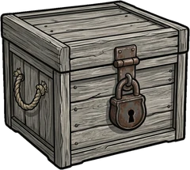
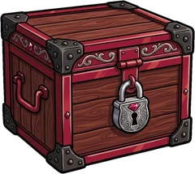
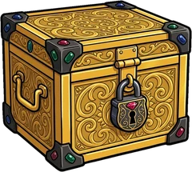
- What’s insideMaterials, blueprints, Rarity Gems, Keys and repair kits.
- Walk BoostWatch an ad for a pass: crates and Foot Prints come faster for your next 3,000 steps.
Tap the Crate to Open
Craft the gear you want.
Build shoes, laces and charms from the materials and blueprints your crates drop. Pick the rarity, the look and the stat that rolls high.
- Four zones, four colorsUpper, panel, mudguard and sole each take a color of their own.
- Socket a charmCharms and laces carry their own stats, so build the shoe around how you walk.
- Beat the oddsA craft can miss, and the rarer it is the harder it lands. Watch an ad first to raise your chance.
- 01Base
- 02Look
- 03Charm
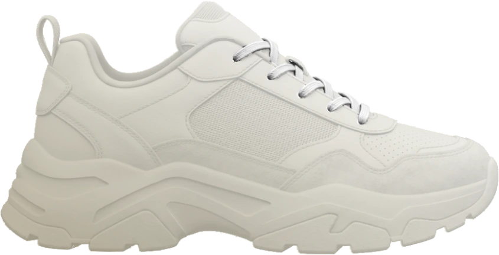
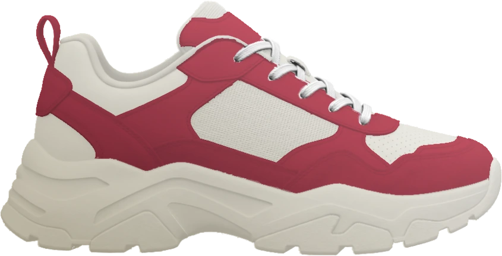
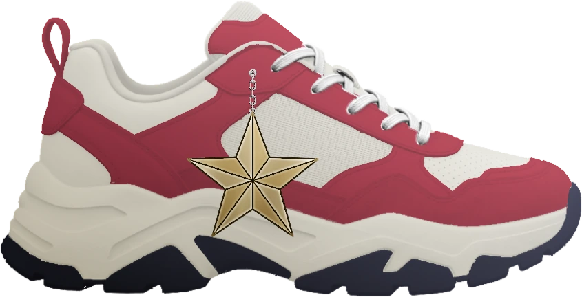
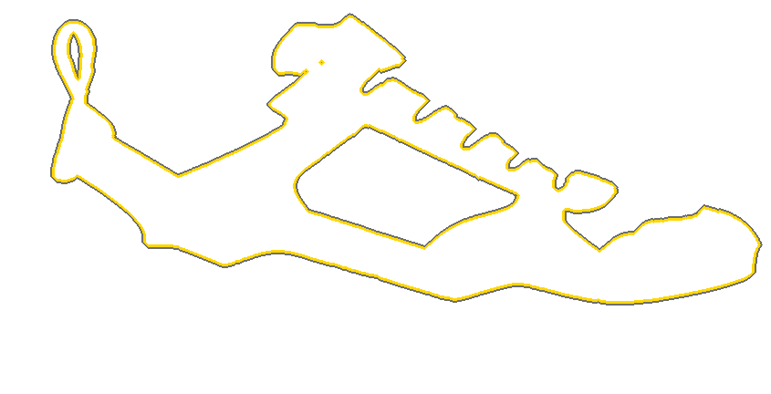
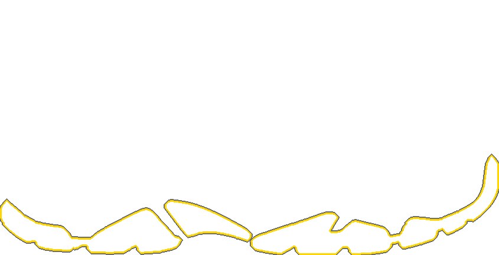
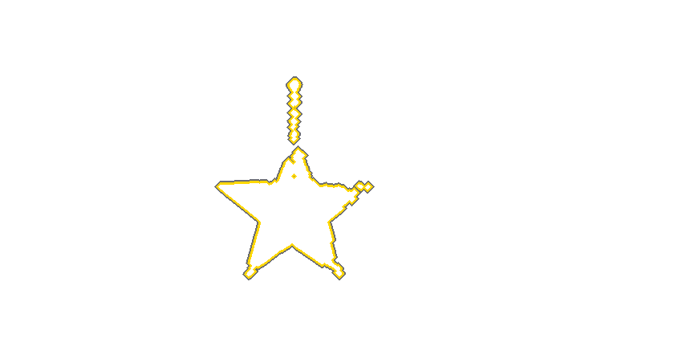
PanelRuby SoleGunmetal CharmNautical StarA board of real walkers.
Three step boards: daily, weekly from Monday, and monthly from the 1st, each resetting at 07:00 UTC. Only confirmed steps count, and your prize is waiting the next time you open WALKn.
| Board | 1st | 2nd | 3rd | Runner-ups |
|---|---|---|---|---|
| Daily | 1 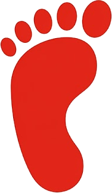 200 | 1100 | 1 | 50 |
| Weekly | 2400 | 2200 | 2 | 1100 |
| Monthly | 3600 | 3300 | 3 | 2150 |
Every prize matches your shoe's rarity, and monthly 1st also wins a charm blueprint. Runner-ups are the next 5 places, rising to 197 as more walkers qualify.
- Walk to qualify5,000 confirmed steps in a day, 25,000 in a week or 125,000 in a month, on a Google-linked account.
- Keep your shoe repairedA broken shoe freezes your place until you repair it.
- A streak board tooRanked by goal streak from day 3, ties to whoever got there first. Bragging rights only.
- Your player cardTap any walker to see their shoe and up to five pinned achievements.
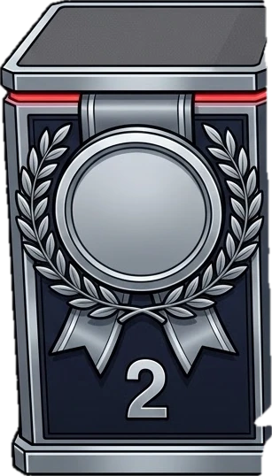
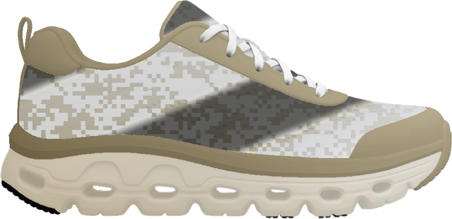
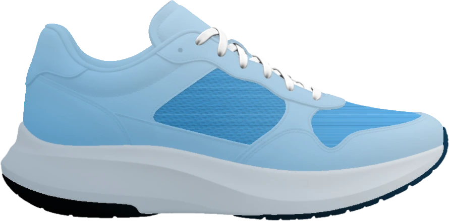
A goal that fits you.
Tell WALKn how active you are, or let your real average set it once you've walked a few days. Hit it for Foot Prints, and when it gets easy, WALKn offers to raise it.
- Streaks pay moreHit your goal day after day and its reward climbs, up to +300% at day 270. Every 30th day brings a streak crate.
- A soft first weekIn the week after you set your first goal, a missed day pauses your streak instead of resetting it.
- Honest goalsSet your goal well below how you really walk and the streak resets, so every streak is earned.
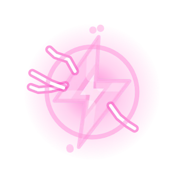
- SparkDay 3+10%
- EmberDay 7+25%
- BlazeDay 14+50%
- Blaze IIDay 21+75%
- InfernoDay 30+100%
- EternalDay 60+125%
- Eternal IIDay 90+150%
- Eternal IIIDay 180+225%
- Eternal MAXDay 270+300%
Shaking your phone earns nothing.
WALKn checks every step against your walking rhythm and, outdoors, the GPS. New steps wait until it's sure you're walking, then count in full.
- Shakes and pickupsA shaken phone has the wrong rhythm, and a few pickups never add up to a walk.
- Car and bus ridesSpotted by their speed and dropped.
- Treadmills countIndoors, where GPS can't help, your walking rhythm confirms the steps.
A swipe from the watch face.
Four Wear OS tiles put your steps, your leaderboard rank, your shoe and your crates on your wrist. They update from your phone, even with the app closed.
- Climbing to your goal
- The last tenth, and every step past it
- Goal hit
- Hours left on today's board
- The last 6 hours
- A podium place: gold, silver or bronze
- XP to the next level
- Damage past 70%: it starts to cost you
- From 85%: your rank is at risk
- Everyday crates, red once the day is full
- Spots only a pass can open
- Your next crate, building
The watch app installs from Google Play on the watch, and WALKn on your phone shows when the two are linked.
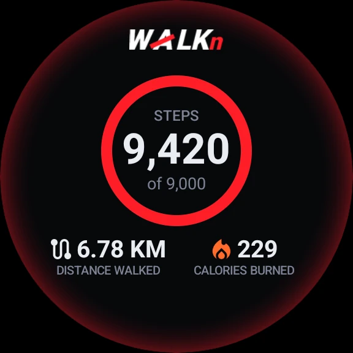
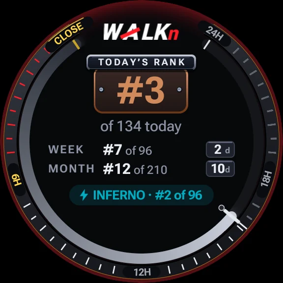
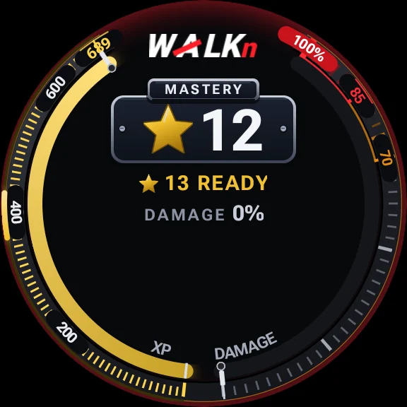
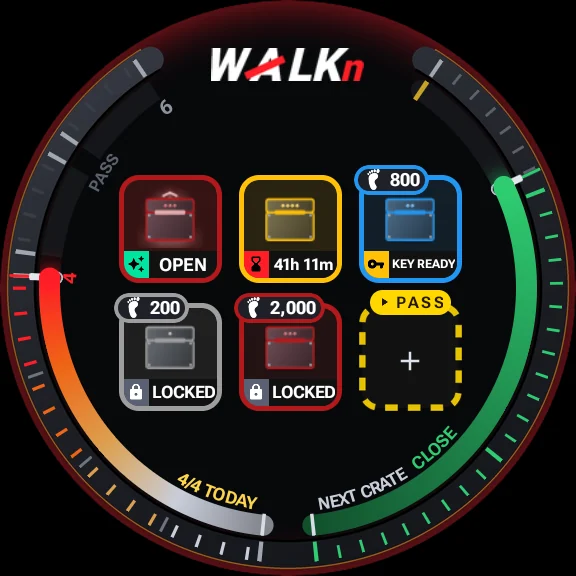
Built to be trusted.
WALKn earns from one thing: the rewarded ads you choose to watch. Everything else is yours.
- Nothing to buyNo in-app purchases, no subscriptions, no paywall.
- No forced adsEvery ad is one you chose to watch.
- No background locationWALKn never asks for it. Location only checks your steps and distance.
- Alerts you controlSwitch each kind of alert off on its own. Only update deadlines always come through.
- Your progress, backed upLink Google and a new phone picks up where you left off.
- Your data, your callRead the privacy policy, or delete your data at any time.
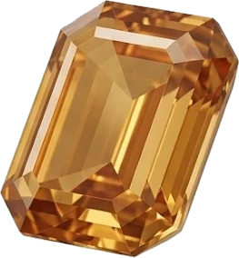
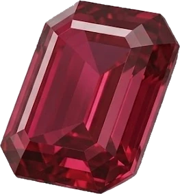
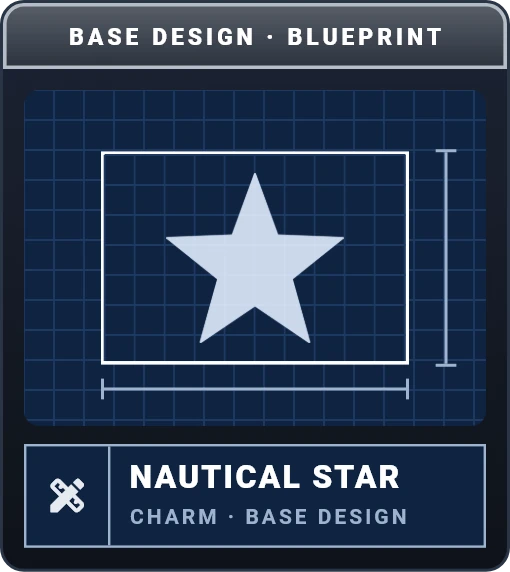
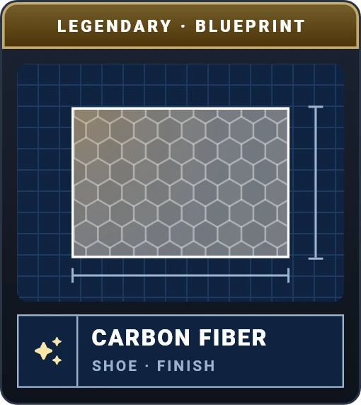
Walk. Loot. Level up.
Your first crate comes within 1,000 steps, and its unlock is on us. Free on Google Play, with Wear OS tiles for your watch.